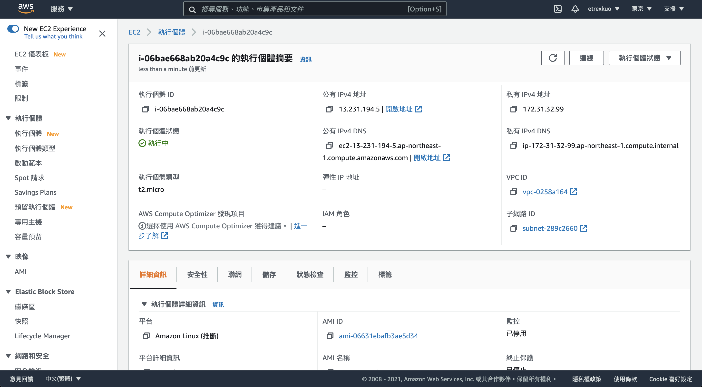

設定 AWS EC2 的 SSH 連線
ssh 指令需要金鑰、用戶名稱和 Host 三個資訊。
- 金鑰: 就是下載下來的
aws.pem檔案 - 用戶名稱: 固定為
ec2-user - Host: 就是在 AWS EC2 執行個體內頁的公有 IPv4 DNS
連線指令為：
ssh -i 金鑰檔案路徑 用戶名稱@Host
取得金鑰
在建立執行個體時，下載的 aws.pem 檔案即為金鑰。
取得用戶名稱
在官方文件中提到：
針對啟動執行個體的 AMI，取得預設使用者名稱：
- 針對 Amazon Linux 2 或 Amazon Linux AMI，使用者名稱為 ec2-user。
- 針對 CentOS AMI，使用者名稱為 centos。
- 針對 Debian AMI，使用者名稱為 admin。
- 針對 Fedora AMI，使用者名稱為 ec2-user 或 fedora。
- 針對 RHEL AMI，使用者名稱為 ec2-user 或 root。
- 針對 SUSE AMI，使用者名稱為 ec2-user 或 root。
- 針對 Ubuntu AMI，使用者名稱為 ubuntu。 萬一 ec2-user 和 root 無法使用，請洽詢 AMI 供應商。
取得 Host
在執行個體中的公有 IPv4 DNS資訊就是 Host。
連線示範
以下圖為例：

可以看出我的 公有 IPv4 DNS 是 ec2-13-231-194-5.ap-northeast-1.compute.amazonaws.com。
而我的金鑰放在 ~/.ssh 資料夾下。
所以我的完整連線資訊如下：
- 金鑰:
~/.ssh/aws.pem - 用戶名稱:
ec2-user - Host:
ec2-13-231-194-5.ap-northeast-1.compute.amazonaws.com
直接連線
ssh -i ~/.ssh/aws.pem ec2-user@ec2-13-231-194-5.ap-northeast-1.compute.amazonaws.com
輸入後會看到：
The authenticity of host 'ec2-13-231-194-5.ap-northeast-1.compute.amazonaws.com (13.231.194.5)' can't be established.
ECDSA key fingerprint is SHA256:fyGXFib97wlzCOpkDYvt95UroUOd16GuBL18S1hFybk.
Are you sure you want to continue connecting (yes/no/[fingerprint])? yes
輸入 yes 後按下 enter：
__| __|_ )
_| ( / Amazon Linux 2 AMI
___|\___|___|
https://aws.amazon.com/amazon-linux-2/
[ec2-user@ip-172-31-32-99 ~]$
看到此畫面代表連線成功。
透過 config 設定來連線
編輯 ~/.ssh/config 檔案，並且輸入以下內容：
Host aws
HostName ec2-13-231-194-5.ap-northeast-1.compute.amazonaws.com
User ec2-user
IdentityFile ~/.ssh/aws.pem
ForwardAgent yes
存檔後，可使用以下指令來連線：
ssh aws
其結果相當於使用直接連線的指令。